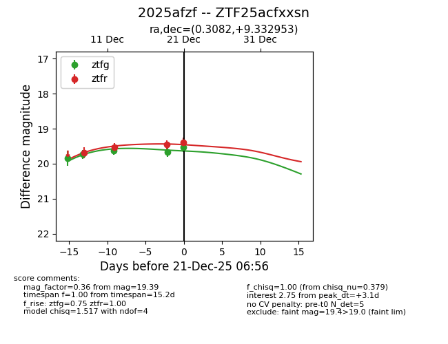
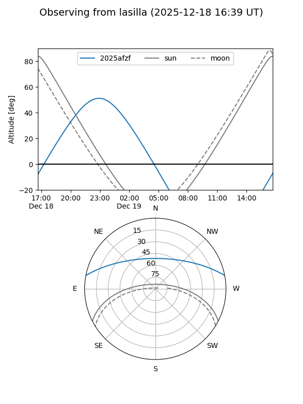
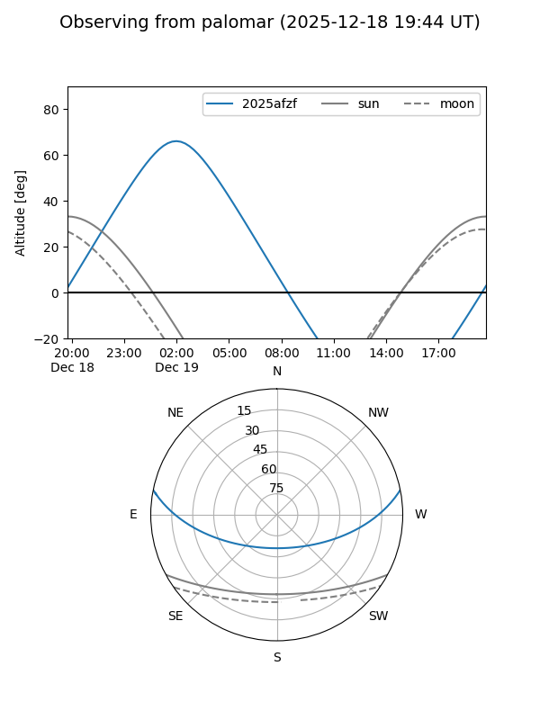

2025afzf
Target 2025afzf at 2025-12-31 16:59
Aliases and brokers:
FINK:
Lasair:
ALeRCE:
TNS:
YSE:
alt names
ZTF25acfxxsn (ztf,fink_ztf)
2025afzf (tns,yse)
Coordinates:
equatorial (ra, dec) = 0.3082,+9.33295
equatorial (HMS+DMS) = 00:01:13.97,+09:19:58.63
galactic (l, b) = (102.7543,-51.56114)
Flags:
Photometry:
last ztfg=19.54, ztfr=19.39
5 ztfg, 4 ztfr detections
Lightcurve

Visibility


Additional plots